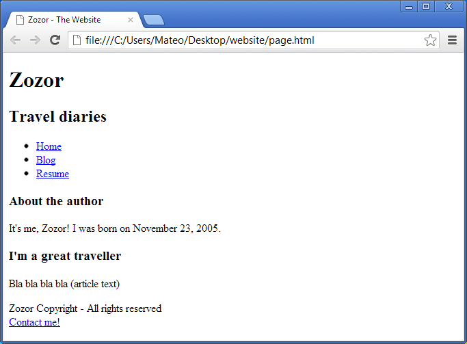
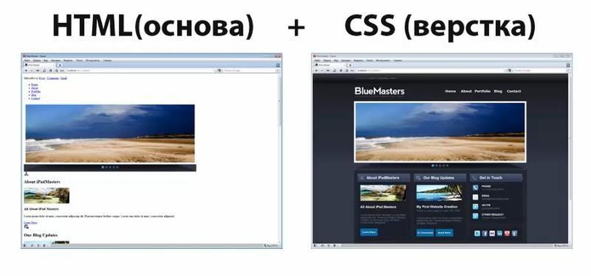

The first and most important of them is HTML. If you compare a website with a person, then HTML is a kind of skeleton, which is the main basis and on which everything else rests
Knowing only HTML, you can already write a simple site

The second of the main programming languages that must be studied is CSS

Continuing the analogy with the human body, CSS can be called a skin that gives a beautiful look to an existing skeleton from HTML
And the last, most important programming language for web developers is Java Script
This programming language can be called the muscles of the body, because it adds functionality to the already existing skeleton (HTML) and skin (CSS)
Thank you for visiting my site, you can contact me in VK